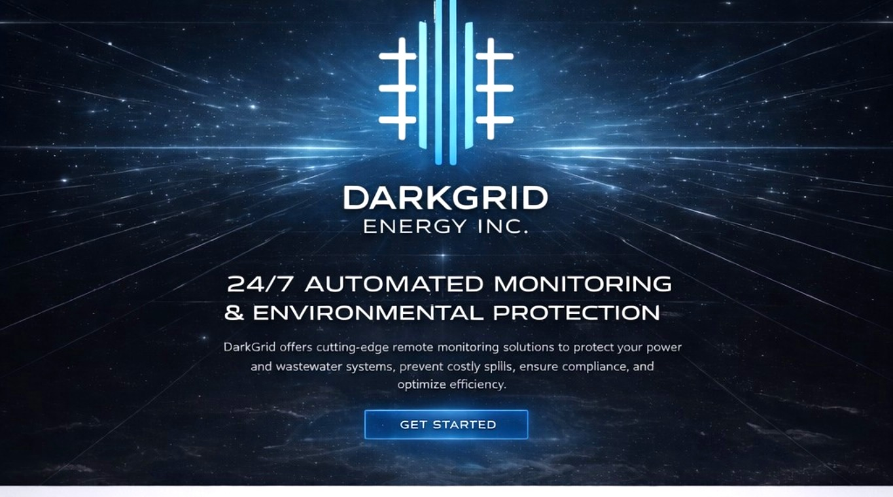

Camp Monitoring
Reduce critical failures and improve visibility across remote camps and off-grid infrastructure.
Learn More
DarkGrid offers premium remote monitoring solutions for lift stations, pumps, heat trace systems, remote camps, and wastewater infrastructure to prevent failures, reduce downtime, and avoid costly spills.
Designed for critical infrastructure, environmental protection, and fast response in remote and demanding conditions.
Reduce critical failures and improve visibility across remote camps and off-grid infrastructure.
Learn MoreDetect failures early, improve response time, and help prevent costly wastewater spills.
Learn MoreMonitor pump activity to reduce flood risk, downtime, and hidden system issues before they escalate.
Learn MoreProtect piping and tanks from freeze-ups, outages, and failures in cold and critical environments.
Learn MoreView alarm status, device activity, and system conditions in real time. DarkGrid is built to give operators, maintenance teams, and decision-makers a cleaner picture of what matters most.

DarkGrid builds monitoring solutions tailored to your site, your alarm workflow, and your environmental protection goals.
Get a Quote